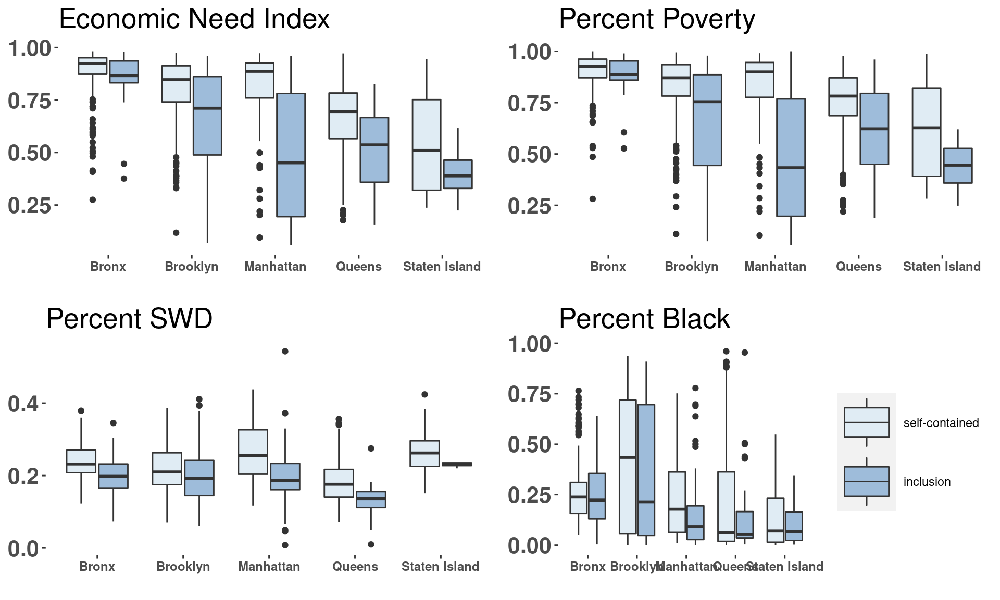
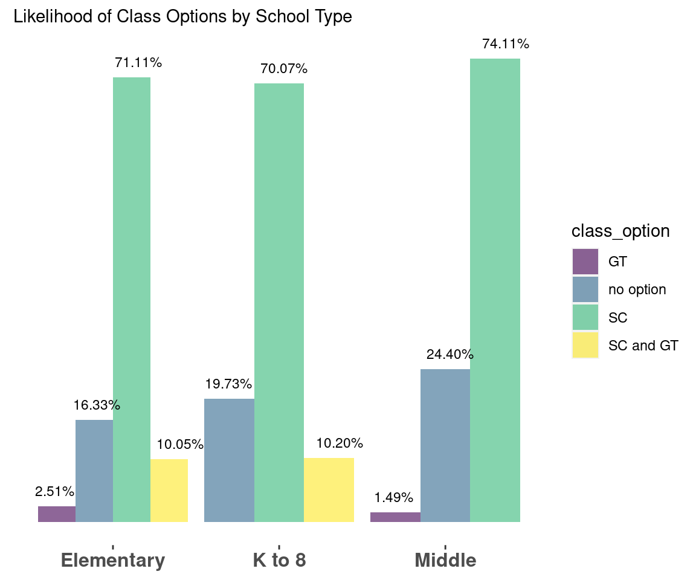
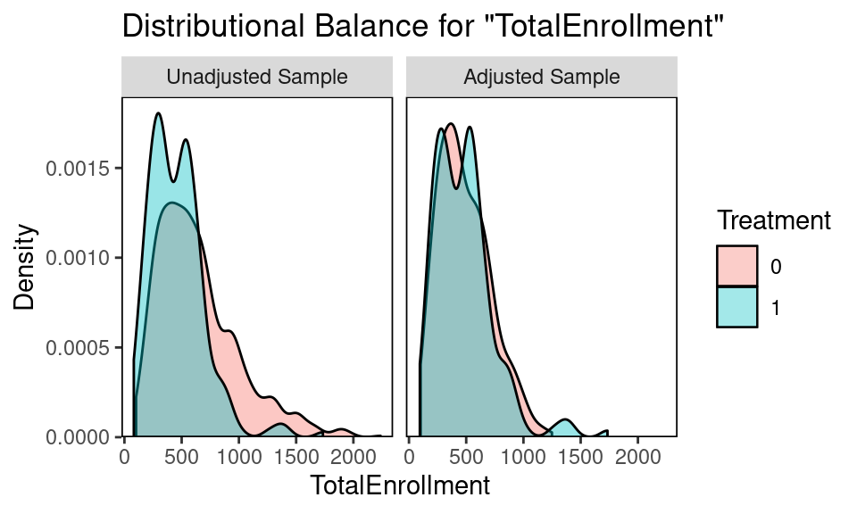
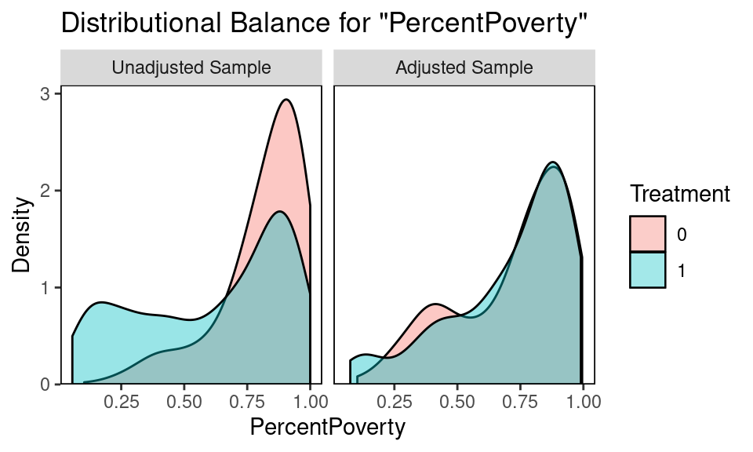
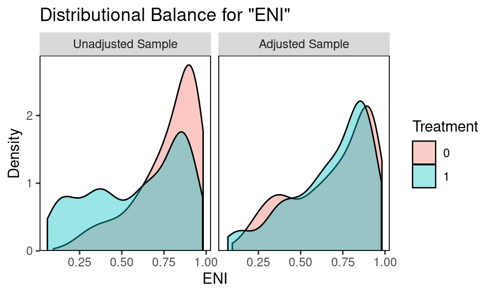
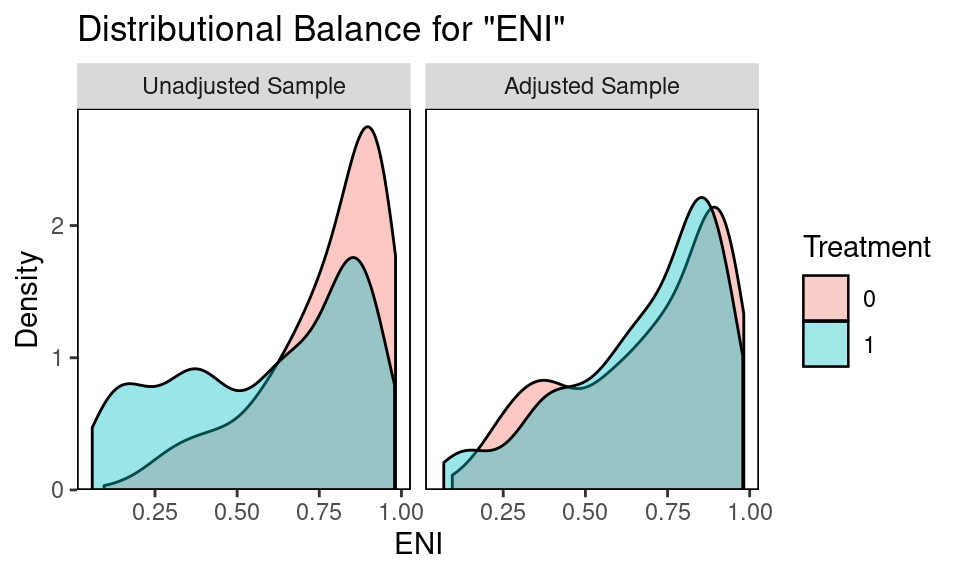
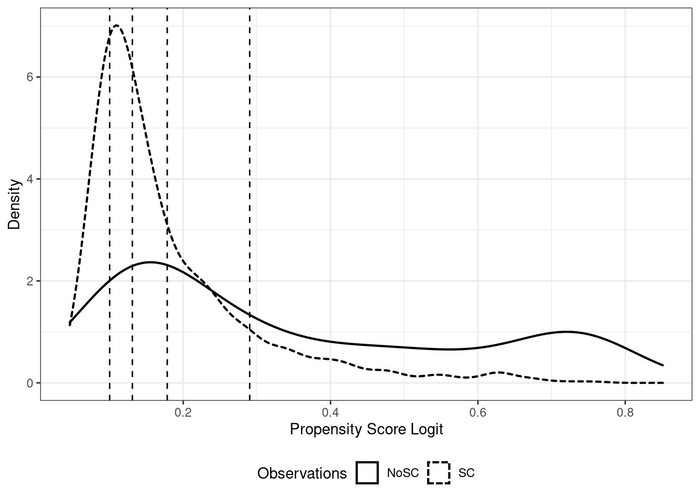

3 Research Question
How do class options and offerings in schools vary based on socioeconomic factors of NYC public schools? What is the effect of inclusion on overall school attendance and chronic absenteeism?
3.1 Data Overview
3.1.1 Data cleaning
Using OpenData NYC, we pull aggregate K-8 attendance records and socio-economic variables for all 1125 public schools.
| DBN | School Name | ENI | % Male | % Black | %SWD | % Poverty | |
|---|---|---|---|---|---|---|---|
| 1 | 01M015 | P.S. 015 Roberto Clemente | 190 | 0.890 | 0.479 | 0.032 | 0.258 |
| 2 | 01M019 | P.S. 019 Asher Levy | 257 | 0.679 | 0.556 | 0.062 | 0.350 |
| 3 | 01M020 | P.S. 020 Anna Silver | 497 | 0.800 | 0.509 | 0.032 | 0.237 |
3.1.2 Raw differences in covariates
Between treatment and control, outcome (attendance and chronic absenteeism) and socio-economic covariates are all statistically different, as assessed by a two sample t test.
| Treatment | Mean Attendance | Mean Chronic Absenteeism |
|---|---|---|
| 0 | 92.23 | 27.55 |
| 1 | 93.48 | 19.83 |
| Treatment | ENI | Percent Black | PercentSWD | Percent Poverty | Total Enrollment |
|---|---|---|---|---|---|
| 0 | 0.77 | 0.287 | 0.22 | 0.812 | 641.898 |
| 1 | 0.59 | 0.218 | 0.19 | 0.611 | 457.217 |
3.1.3 Covariates
Treatment (inclusion) is a significant predictor of absenteeism (CA), without matching. However, five covariates generally associated with higher absenteeism are predictive of both the treatment and the outcome, making them confounders.
\[ \begin{align} ChronicAbsenteeism = \beta_0 +\beta_1Treatment + \beta_2ENI+ \beta_3PercentBlack+\beta_4PercentSWD + \\ \beta_5PercentPoverty +\beta_6PercentPoverty+ BoroughFixedEffects + \epsilon \end{align} \]
| Predictor | B | SE | t | p |
|---|---|---|---|---|
| (Intercept) | 1.78 | 1.692 | 1.05 | 0.293 |
| treatment | -1.88 | 0.684 | -2.75 | 0.006 |
| TotalEnrollment | 0.00 | 0.001 | -3.97 | 0.000 |
| ENI | 43.59 | 3.981 | 10.95 | 0.000 |
| PercentBlack | 16.62 | 1.068 | 15.56 | 0.000 |
| PercentSWD | 36.88 | 4.501 | 8.19 | 0.000 |
| PercentPoverty | -20.36 | 3.960 | -5.14 | 0.000 |
| factor(borough)Brooklyn | -3.76 | 0.683 | -5.51 | 0.000 |
| factor(borough)Manhattan | -2.58 | 0.831 | -3.10 | 0.002 |
| factor(borough)Queens | -2.62 | 0.788 | -3.33 | 0.001 |
| factor(borough)Staten Island | 1.22 | 1.248 | 0.98 | 0.330 |
| Predictor | B | SE | t | p |
|---|---|---|---|---|
| (Intercept) | 1.19 | 0.065 | 18.27 | 0.000 |
| TotalEnrollment | 0.00 | 0.000 | -10.35 | 0.000 |
| ENI | 0.08 | 0.174 | 0.44 | 0.663 |
| PercentBlack | -0.08 | 0.047 | -1.79 | 0.074 |
| PercentSWD | -1.21 | 0.194 | -6.27 | 0.000 |
| PercentPoverty | -0.68 | 0.172 | -3.94 | 0.000 |
| factor(borough)Brooklyn | 0.01 | 0.030 | 0.44 | 0.663 |
| factor(borough)Manhattan | 0.17 | 0.036 | 4.73 | 0.000 |
| factor(borough)Queens | -0.11 | 0.034 | -3.23 | 0.001 |
| factor(borough)Staten Island | -0.17 | 0.054 | -3.10 | 0.002 |
3.1.4 Visuals



3.2 Matching
We match at a ratio of 3:1, control:treatment groups. The original sample has 885 Control (no inclusion) schools and 240 Treatment (inclusion) schools. The matched sample has 418 Control and 181 Treatment. All covariates cross the acceptable standardized mean difference threshold, and visual diagnostics of the covariate distributions confirm the balance improvement.
3.2.1 Assess Balance
#> Call
#> matchit(formula = treatment ~ PercentBlack + PercentSWD + PercentPoverty +
#> TotalEnrollment + ENI, data = merged, method = "nearest",
#> caliper = 0.25, ratio = 3, family = binomial())
#>
#> Balance Measures
#> Type Diff.Adj M.Threshold
#> distance Distance 0.0506 Balanced, <0.1
#> PercentBlack Contin. 0.0545 Balanced, <0.1
#> PercentSWD Contin. -0.0082 Balanced, <0.1
#> PercentPoverty Contin. -0.0288 Balanced, <0.1
#> TotalEnrollment Contin. -0.0293 Balanced, <0.1
#> ENI Contin. -0.0236 Balanced, <0.1
#>
#> Balance tally for mean differences
#> count
#> Balanced, <0.1 6
#> Not Balanced, >0.1 0
#>
#> Variable with the greatest mean difference
#> Variable Diff.Adj M.Threshold
#> PercentBlack 0.0545 Balanced, <0.1
#>
#> Sample sizes
#> Control Treated
#> All 885. 240
#> Matched (ESS) 340.67 181
#> Matched (Unweighted) 418. 181
#> Unmatched 467. 59
 

3.2.2 Matched Estimates
Matching yields a statistically significant treatment effect for both absenteeism and attendance, improving our confidence in the causal effect of inclusion on overall school attendance rates.
\[ \begin{align} ChronicAbsenteeism = \beta_0 +\beta_1Treatment + \epsilon \end{align} \]
| Predictor | B | SE | t | p |
|---|---|---|---|---|
| (Intercept) | 27.06 | 0.608 | 44.51 | 0 |
| treatment | -4.54 | 1.106 | -4.10 | 0 |
| Predictor | B | SE | t | p |
|---|---|---|---|---|
| (Intercept) | 92.29 | 0.130 | 709.17 | 0.000 |
| treatment | 0.65 | 0.237 | 2.75 | 0.006 |
3.3 Heterogeneous Treatment Effects
Using only socioeconomic variables in the propensity score model (Percent Black, Percent SWD, Percent Poverty, ENI), and adding Total Enrollment to the outcome model, we explore heterogeneous treatment effects for low-SES schools. Treatment effect of inclusion is strongest for our low-income, high-minority schools.
#> treatment TotalEnrollment ENI PercentBlack PercentSWD PercentPoverty
#> 1 1 190 0.890 0.274 0.258 0.847
#> 2 0 257 0.679 0.191 0.350 0.770
#> 3 0 497 0.800 0.103 0.237 0.736
#> 4 1 333 0.937 0.318 0.372 0.979
#> 5 1 203 0.762 0.182 0.330 0.818
#> 6 1 245 0.882 0.208 0.298 0.922
#> borough X..Chronically.Absent X..Attendance distance subclass
#> 1 Manhattan 19.0 93.8 0.16861999 2
#> 2 Manhattan 34.6 91.4 0.09205958 1
#> 3 Manhattan 29.4 92.4 0.24256756 3
#> 4 Manhattan 40.5 89.8 0.05575963 1
#> 5 Manhattan 28.4 92.3 0.09639046 1
#> 6 Manhattan 42.7 89.6 0.08385419 1
#> # A tibble: 10 × 4
#> # Groups: subclass [5]
#> subclass treatment mean_distance mean_black
#> <fct> <dbl> <dbl> <dbl>
#> 1 1 0 0.0984 0.310
#> 2 1 1 0.0990 0.305
#> 3 2 0 0.155 0.318
#> 4 2 1 0.161 0.286
#> 5 3 0 0.245 0.282
#> 6 3 1 0.255 0.294
#> 7 4 0 0.433 0.119
#> 8 4 1 0.476 0.155
#> 9 5 0 0.678 0.0815
#> 10 5 1 0.731 0.0518
#> < table of extent 0 >
#>
#> Call:
#> lm(formula = X..Chronically.Absent ~ treatment + factor(subclass) +
#> factor(subclass) * treatment - 1 + TotalEnrollment, data = wd_nomiss2)
#>
#> Residuals:
#> Min 1Q Median 3Q Max
#> -34.301 -7.763 -0.280 7.059 33.239
#>
#> Coefficients:
#> Estimate Std. Error t value Pr(>|t|)
#> treatment -6.4513757 1.5802241 -4.083 4.77e-05 ***
#> factor(subclass)1 39.1381340 0.7256532 53.935 < 2e-16 ***
#> factor(subclass)2 35.4994466 0.9420934 37.681 < 2e-16 ***
#> factor(subclass)3 32.5913823 1.0670091 30.545 < 2e-16 ***
#> factor(subclass)4 24.8450954 1.3700474 18.134 < 2e-16 ***
#> factor(subclass)5 19.4861749 3.7189215 5.240 1.92e-07 ***
#> TotalEnrollment -0.0122799 0.0009567 -12.835 < 2e-16 ***
#> treatment:factor(subclass)2 0.8213276 2.2664214 0.362 0.717
#> treatment:factor(subclass)3 3.5701059 2.2938611 1.556 0.120
#> treatment:factor(subclass)4 1.2504984 2.4440761 0.512 0.609
#> treatment:factor(subclass)5 2.2984464 4.2239122 0.544 0.586
#> ---
#> Signif. codes: 0 '***' 0.001 '**' 0.01 '*' 0.05 '.' 0.1 ' ' 1
#>
#> Residual standard error: 10.27 on 1114 degrees of freedom
#> Multiple R-squared: 0.8755, Adjusted R-squared: 0.8743
#> F-statistic: 712.2 on 11 and 1114 DF, p-value: < 2.2e-16